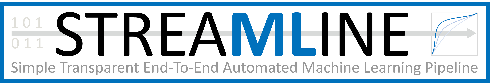
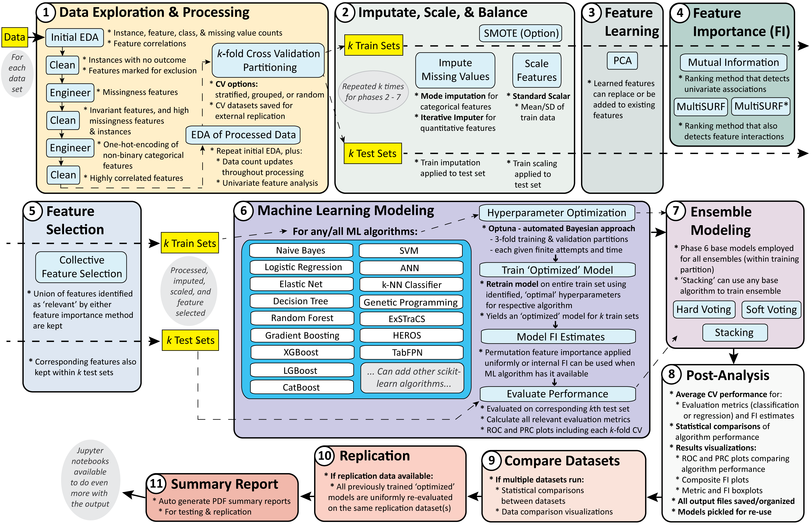

STREAMLINE

Overview
STREAMLINE is an end-to-end automated machine learning pipeline for supervised tabular data. The v1.0.0 main release supports binary classification, multiclass classification, and regression, with integrated data processing, imputation, scaling, feature learning, feature importance, feature selection, model training, classification ensembles, summary statistics, dataset comparison, replication, and PDF reporting.
The schematic below summarizes the STREAMLINE v1.0.0 workflow.
{kind=link}

The repository is organized around eleven explicit phases:
Phase |
Name |
Purpose |
|---|---|---|
P1 |
Data Process |
Load data, infer or apply feature types, run exploratory summaries, and create CV partitions. |
P2 |
Impute and Scale |
Impute missing values, scale quantitative features, and optionally apply SMOTE/SMOTENC to training folds. |
P3 |
Feature Learning |
Learn transformed features such as PCA components and record feature-learning manifests. |
P4 |
Feature Importance |
Score features with filter-style feature-importance methods. |
P5 |
Feature Selection |
Select reduced feature sets for downstream modeling. |
P6 |
Modeling |
Train and evaluate base models with Optuna accounting and optional native categorical handling. |
P7 |
Ensembles |
Train classification ensembles on top of base model predictions. |
P8 |
Summary Statistics |
Aggregate metrics and summarize model and feature behavior. |
P9 |
Compare Datasets |
Compare results across datasets within an experiment. |
P10 |
Replication |
Apply trained workflows to external replication datasets. |
P11 |
Reporting |
Generate standard and replication PDF reports. |
Recommended Starting Points
Use Installation if you are setting up a local environment.
Use Running STREAMLINE if you want to run a demo immediately.
Use Datasets if you are preparing a custom dataset.
Use Run Parameters when editing a
.cfgfile or notebook parameter block.Use Output after a run to find reports, metrics, figures, and saved models.
Quick Start
For most users, the easiest local route is:
conda create -n streamline python=3.11 pip
conda activate streamline
pip install -r requirements.txt
python run.py -c run_configs/uci_binary_hcc.cfg --dry_run
python run.py -c run_configs/uci_binary_hcc.cfg
The notebooks expose the same major settings as the config files and are a better starting point for interactive tutorials, Colab demos, and custom data exploration.
How This Documentation Is Organized
Use Installation to prepare a local environment.
Use Datasets to format custom datasets and understand the included UCI demos.
Use Running STREAMLINE for notebooks, config-driven runs, and phase-by-phase CLI commands.
Use Run Parameters when editing
.cfgfiles or command-line calls.Use Output to navigate experiment folders and reports.
Use Detailed Pipeline Walkthrough for a phase-by-phase explanation of what STREAMLINE does.
Use Changelog to review dated release entries and notable changes.
Version History
This site documents the STREAMLINE v1.0.0 main release. See Changelog for dated release entries and notable changes.
Current Scope
STREAMLINE is intended for supervised learning on tabular datasets. It does not automate feature extraction from unstructured data such as free text, images, audio, video, or raw time-series streams. Regression runs should skip P7 because the current ensemble registry is classification-only.
Disclaimer
STREAMLINE assembles a practical, reproducible machine learning workflow, but it is not a guarantee that the included preprocessing choices, models, or metrics are optimal for every scientific question. Users should still review input data quality, feature definitions, leakage risk, metric choice, and domain-specific interpretation.
Contact
For general questions and collaborations, contact Ryan Urbanowicz at
ryan.urbanowicz@cshs.org.
For codebase, installation, running, troubleshooting, and implementation
questions, contact Harsh Bandhey at harsh.bandhey@cshs.org.